正文共计4300字左右
预计阅读时间8min
转载请在后台回复“授权”
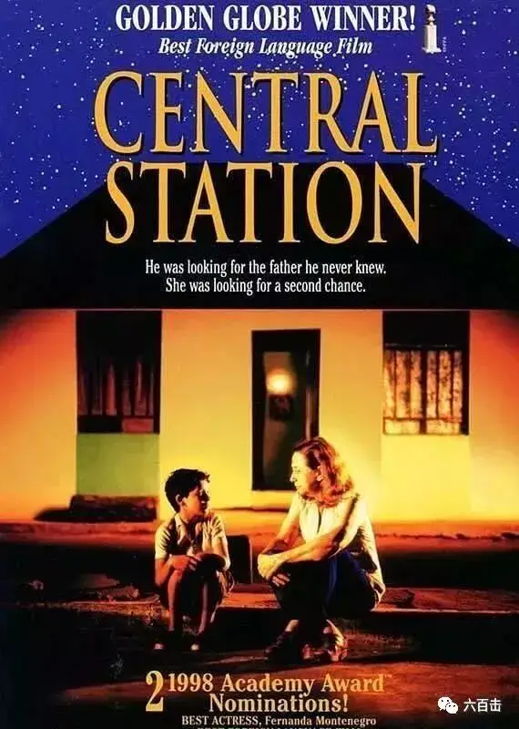

如果有人找我推荐一部适合父亲节看的作品。
我会立马想到《中央车站》。
这是一部电影史上非常著名的公路片，讲述了小男孩约书亚与中年妇人朵拉一同寻找约书亚父亲的故事。
电影真挚感人，在世界各地收获了50多个奖项，包括当年柏林电影节金熊奖、全球奖和英国电影和电视艺术学院最佳外语影片，并获得了当年奥斯卡最佳外语片的提名 。

女主角朵拉已经年过半百，可依旧一个人生活在冰冷忙碌的里约热内卢，所做的事情就是每天在中央车站给文盲写信和代寄信。
贫困和没有爱情的生活使她变得贪婪、冷酷，缺少起码的同情心。
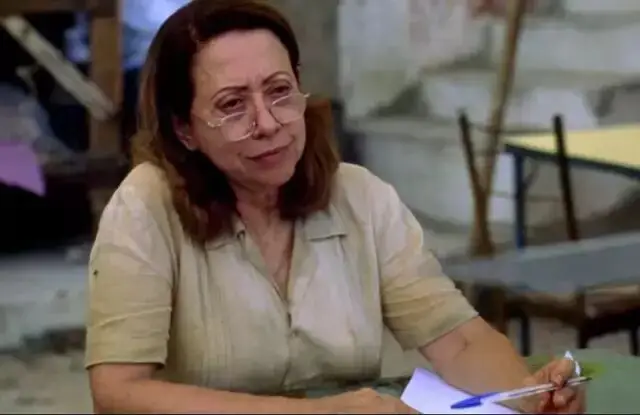
她每天守在那张小桌旁，飞快地、同时也是冷冰地记录着那些请她写信的人的心声。
而这些信要经过朵拉和她唯一的朋友艾琳的审查。
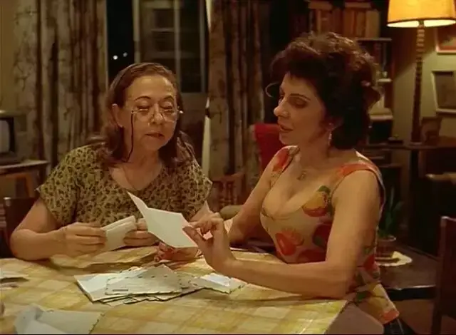
如果她们觉得内容无聊，就直接将信撕毁扔掉。
如果觉得有趣，就放在抽屉里当日后消遣娱乐的读物。
总之，朵拉欺骗了所有人，这些信从不会寄出去。
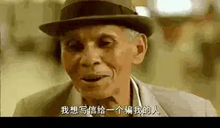
一天，一个女人带着他的儿子约书亚，来找朵拉代笔写信给自己的丈夫。
丈夫的名字吓了朵拉一大跳，叫做耶稣。
朵拉不由抬头望了望这对母子，看是不是精神不正常。

小约书亚很敏感，很快觉察到了朵拉的猜疑。
因此，小男孩的言语和眼神中也充满了对朵拉的不信任。

终于，朵拉代笔写完了信，可以摆脱那个淘气的熊孩子了。
可那对母子在离开的路上却发生了不幸，约书亚的母亲意外遭遇车祸当场去世。
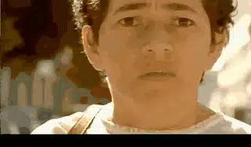
约书亚立马变成了无依无靠的孤儿。
而他唯一的希望就是，找到他的爸爸耶稣，一个素未谋面的父亲。
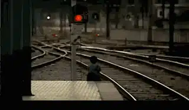
这场交通意外，朵拉看在眼里，也许正是这仅存的同情，朵拉将约书亚带回了家。
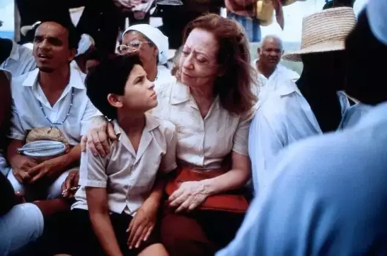
但是往后的日子还长着呢？朵拉不可能一直照顾约书亚。
于是，朵拉想到了自己在车站认识的人贩子，索性将约书亚卖给了他。
事情办完后，朵拉心中有愧。
可她自我安慰，觉得他的朋友只不过是将这些孩子卖给欧洲需要孩子的家庭，约书亚如果被送到一个好人家，他会过的更好。
可当好友艾琳知道这件事后，她严厉的告诉朵拉，他们是要将小孩杀害，并贩卖人体器官。
当晚，朵拉良心难安，辗转反侧难以入睡。
第二天她想办法救回了约书亚。
于是，像是生命的两极——纯真与苍老，喜悦与忧伤，一老一少一起踏上了寻找约书亚父亲耶稣的旅程。
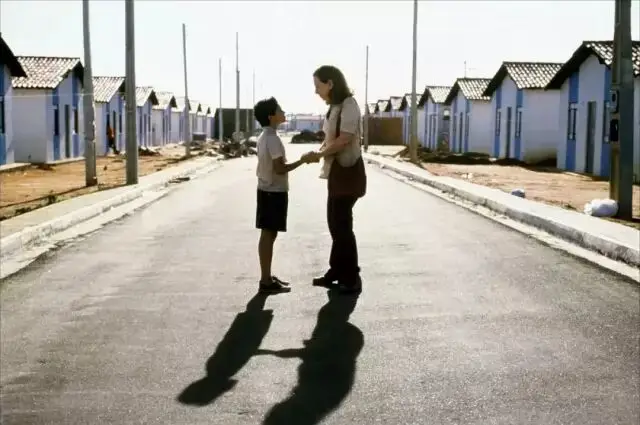
是旅程，就一定有明确的目的地和足够的信心。
可这场寻父之旅从一开始就是软弱无力的。
一向冷漠的朵拉并不打算一直陪着约书亚去找父亲。
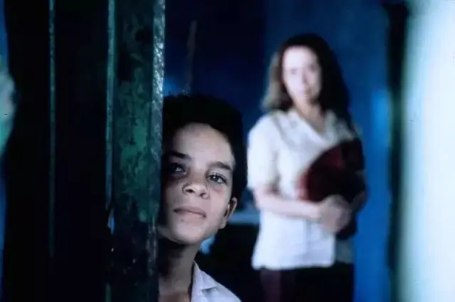
事实上从心底里，朵拉认为耶稣也不过是个不负责任的酒鬼父亲。
寻找这样的父亲，也只有像约书亚这样的小孩才会有所幻想。
朵拉都能够想象的到，当约书亚看到酒鬼父亲后会是多么的心碎和失望。
毕竟，她见过太多不负责任的酒鬼父亲。
而她自己的父亲也是这个样子的。
当朵拉十几岁的时候，无意中撞见了“失踪”多年的酒鬼父亲时，朵拉问他，“你认识我么？”。
而父亲的回答，彻底的熄灭了朵拉对于父爱的期待，“我怎么会忘记你这个大美女呢？”
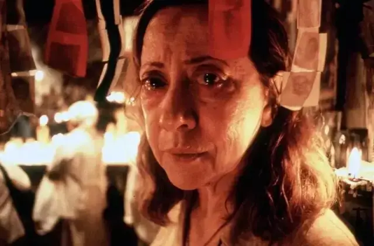
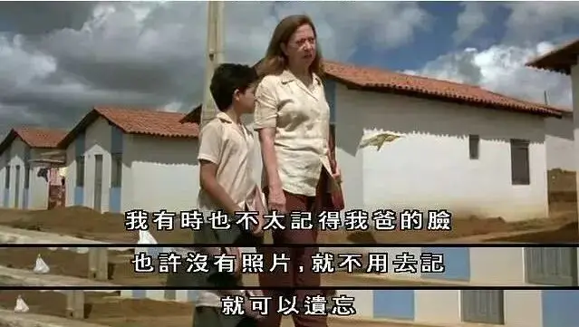
内心早已枯干的朵拉自然对约书亚的事不屑一顾。
所以在大巴中途休息的时候，朵拉还是决定转身离去。
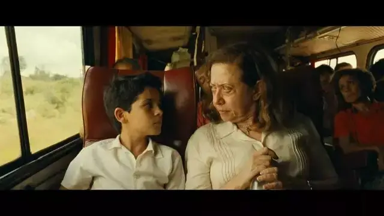
她将信和身上所有的钱都留给了熟睡中的约书亚，这也算仁至义尽了。
可让她没有想到，约书亚并没有坐大巴离开，而早已下了大巴，并趴在桌上忧伤地看着远方。
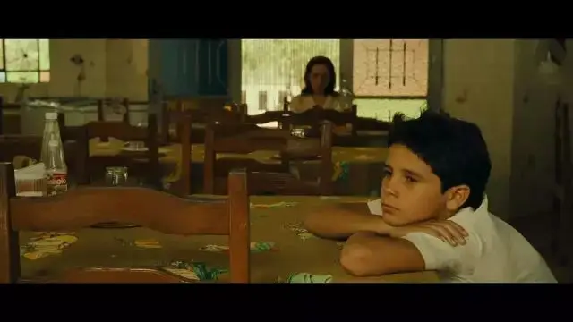
这让朵拉一筹莫展，不知如何处理。
忽然，朵拉跳了起来，她急忙问约书亚钱在哪里。
非常不幸，朵拉留给约书亚的钱都丢在了大巴上，而大巴早已经扬长而去。
就这样，二人身无分文、四目而对。
在绝望的境地里，互不信任的一老一少不得不相依相偎。
饥肠辘辘的二人，后来遇到了一个刚好顺路的货车司机凯撒。
凯撒风趣幽默又充满怜悯和对人的尊重，渐渐地，朵拉爱上了凯撒。

但是外表阳光的凯撒心底有着一颗居无定所的心，对于一个司机，凯撒认为萍水相逢的滋味最难受。
因为现在是朋友，分开了，就是永远。
而初遇爱情的朵拉却勇敢的吐露了心声。
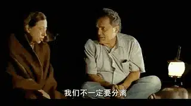

凯撒并未给予答复。
朵拉借机走开。
从未化妆的朵拉去卫生间梳洗，抹了口红，她希望这个时刻，她能以最好的一面去面对这份突然而来的爱情。

可令人心碎的是，凯撒选择了转身“离开”。
这个场景，导演处理的非常“安静”，满怀期待的朵拉把在窗户上看着开车远去的凯撒，伤心从中静静流淌而出，真实而动人
看到伤心的朵拉，一向视朵拉为骗子的约书亚，第一次用他可爱的方式安慰了朵拉，“告诉你一件事，你擦口红很好看”。

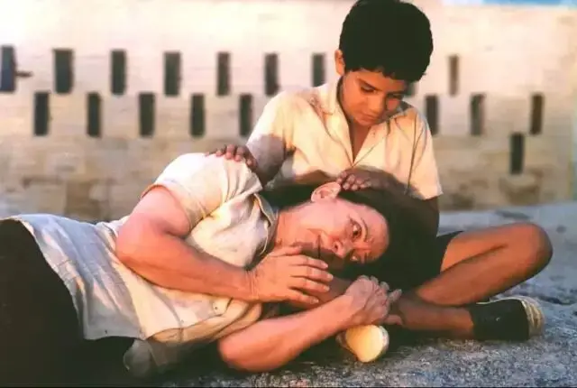
朵拉从未想到，自己竟然会被一个小孩安慰。
她也决定主动帮助约书亚找到他的父亲耶稣，即使她觉得会是一场悲剧。
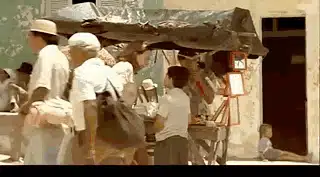
终于二人到了目的地，随着欢快激动的音乐，约书亚快跑在通向幸福之家的小路上。
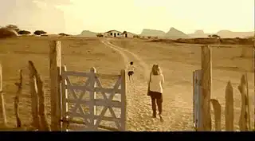
但是，约书亚并没有看到耶稣，房主告诉他们，耶稣卖掉了这里的房子，搬去了其他的地方。
并且钱一到手就成天买醉。

约书亚虽然失落，但并未决定停下寻找的脚步。
二人身无分文，却依旧选择上路。
恰逢当地人隆重的宗教节日，聪明的约书亚忽然想到，朵拉可以写信赚钱。

很快，她们就赚够了路费。
两人高兴的在圣像面前合影。

可爱的约书亚还买了漂亮的裙子送给朵拉。
就这样，朵拉和约书亚逐渐建立起了深厚的感情。

晚上住在旅店，面对那么多的信，面对别人真情流露的声音。
约书亚不知道如何处理，他犹豫了一下，还是无奈的将信丢进了垃圾桶。
而朵拉心底里的人性却被慢慢唤醒了，朵拉要留着这些真挚的信。

很快，二人再次出发，来到了巴西最南边的城市，找到了耶稣的新住宅。
在那里，约书亚遇到了从未谋面的哥哥以赛亚。
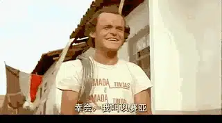
约书亚还有另外一个哥哥摩西，他继承了爸爸耶稣的木匠手艺，有着精湛的手艺。
当提到耶稣的时候，摩西和以赛亚也不知道他哪去了。
因为忽然有一天耶稣不告而别，没人知道原因。
而摩西告诉约书亚，耶稣确实是一个“酒鬼”

耶稣到底去了哪里？
哥哥们曾收到过一份耶稣寄给约书亚母亲的信，因为是寄给别人的信，所以以赛亚和摩西都没有打开信。
而此刻约书亚来了，终于可以公开这封信件。
原来摩西和以赛亚的母亲去世后，耶稣爱上了乔安娜，但是乔安娜（约书亚母亲）后来离开了耶稣，去了里约热内卢。
这让耶稣非常伤心，成日醉酒。
而他忽然离开摩西和以赛亚，是因为他决定去里约热内卢寻找安娜，他要和安娜一起回来，和大家团聚。
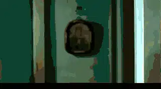
而家里的墙壁上也挂着耶稣和乔安娜的合影

这一切让朵拉大受震撼，原来约书亚说的都是真的，耶稣和他说的一样，他不仅是一个好的木匠，而是是一个好的丈夫和父亲。
约书亚和耶稣彻底唤醒了她沉睡已久的人性和对人生的期许。
她看得出，哥哥们很爱约书亚，约书亚和他们在一起是最好的。
于是，乘着黎明前的夜色，朵拉换上了约书亚买给她的漂亮裙子，再一次在镜子面前画了口红。
她静悄悄地告别了约书亚，同时也告别了过去那个冷漠自私、对生活毫无热情的自己。

这段旅程彻底的更新了朵拉的生命，在爱与被爱、关心和被关心中，温暖的人性被重新唤醒了。
过去朵拉写了无数封“冷冰冰”的信，如今她第一次感受到写信时流淌而出的真挚情感。
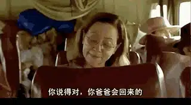
那个时刻，她无比地思念自己的父亲。
过去她对于父亲只有酒鬼的记忆，如今小时候父亲让她坐在车座前大声鸣喇叭的温暖记忆却被唤醒了。
过去只有仇恨和失望，如今却有了温暖、感恩和盼望。
朵拉怀念过去的一切。
原来满目疮痍中，依旧可以找到恩典和饶恕。
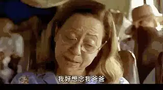
这是一部巴西电影，它非常深刻地表现了当时的社会现状。
90年代的巴西，工业化造成巨大的人口流动，而经济上的不景气，使得80多万青年背井离乡，社会动荡，亲人分居两地。
人们普遍处于一种失衡的状态，而工业化下的大城市拥挤忙碌，贫富差距悬殊、犯罪率高升、暴力执法普遍。
人们似乎在这样一种生活状态之下失去了温暖的“家”。
所以这样一部有关寻找的电影也正是当时无数人的心里诉求，很多找朵拉的写信都是关于远在一方的亲人。
而导演给这个处处都在寻找的社会的答案是：大家需要回到团结、善良和爱中，每个人要重新找寻回失落的良善。
所以电影综合运用很多的手段去刻画那美好的“家园”。
影片的主要色调是土黄色，土黄色是印第安原始艺术中的色彩基调，它代表着大地、家园，这与“寻找家园，寻找父亲”的主题相契合。

除了色彩上的运用，电影直接用一幅画象征“家园”。
那是一幅充满了田园安静气息的画，在一片绿油油的草地中，有一幢白色的小房子。
它首次出现在朵拉家中，后来还出现在旅程中间
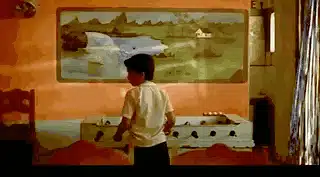
这幅画最后在耶稣家中以现实的形态呈现。
这都代表着巴西人民对于家园的向往。

而与静谧的家园相对比的是中央车站。
中央车站是混乱、忙碌的，无数人插肩而过，但却没有交流
一副北上广上下班高峰期挤地铁的感觉。

而在中央车站找朵拉写信的人，很多内容充满了痛苦、欺骗和悲伤。
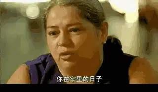
而在朵拉和约书亚最终到达的“家园”，城市整洁、干净充满诗意
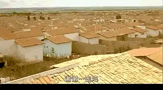
那里的人找朵拉写信，都是充满了感恩和虔诚，即使他们也很贫穷

这部作品刻画了处于历史变革中的巴西人，对于爱、对于家园的渴望。
而电影的深意不止于此。
如果你对宗教不太了解，本片在故事呈现、人物刻画以及对现实的反映和思考上就可以将你征服。
而对于有基督教背景的人来说，本片深层次的信仰表达更意味深远。
小主人公叫约书亚，寻找的父亲是耶稣，而耶稣的其他两个儿子是以赛亚和摩西，这些都是圣经中的人物。
圣经中这样记着“耶和华的仆人摩西死了以后，耶和华晓谕摩西的帮手、嫩的儿子约书亚说：“我的仆人摩西死了。现在你要起来，和众百姓过这约旦河，往我所要赐给以色列人的地去。”
因此，约书亚是被上帝拣选带领以色列进入应许之地的伟大先知，所以约书亚这个名字非常适合这部公路电影的主题和内涵。
除了名字上的象征，电影中许多场景都与宗教有关，比如母亲遭遇车祸，无助的约书亚来到圣像面前仰望。
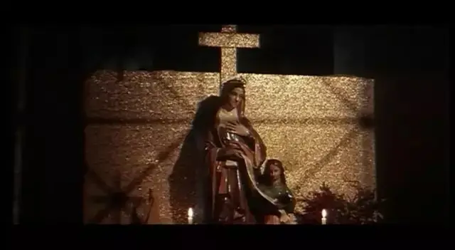
而后面的卡车司机凯撒更是一个传道人，卡车上面写着圣经中的话语。
而找朵拉写信的人，很多信都是写给耶稣的信仰表达。
而耶稣所在的城市是巴西最南部，号称世界的尽头，更是在代表最终的“新天新地”。
再回过头来看看整个故事。
耶稣爱乔安娜，并且去找安娜，让摩西、以赛亚等待自己回来，不正是耶稣进入堕落的世界（里约热内卢）拯救堕落的人类（乔安娜）的故事。
而蒙得救的无数的“摩西”可以称上帝为父，成为上帝的儿女。
在耶稣成就了救恩之后，整个人类历史都在逐渐走向最后的终点——耶稣再来，“摩西”、“以赛亚”“约书亚”都需要在信心中等待耶稣再来。
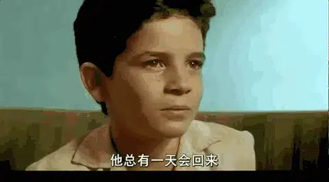
而耶稣的“孩子们”，都需要像“约书亚”那样，带领一个又一个被罪所压伤的朵拉来认识耶稣、寻求释放。
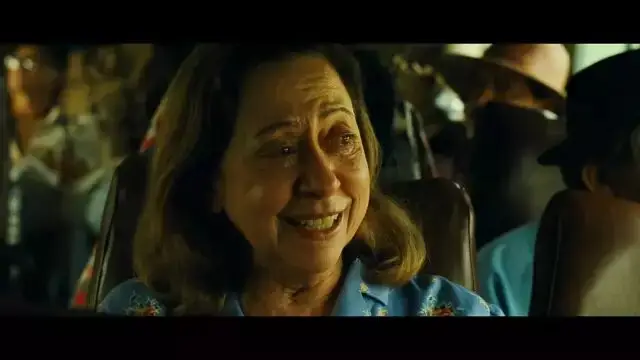
因此，这部电影有很强的神学隐喻。
任何一个人，我们都希望在父亲身上找到足够的安全感、智慧、爱和希望。
可不论父亲的形象被我们刻画的多伟岸，他依旧是一个自私自利、会犯错、有自身局限的“酒鬼”。
父亲的不完美注定给不了我们所需要的一切。
直到有一天，当我们像约书亚和朵拉一样，真正认识了那所有美善力量的“源头”。
我们的心会被活水浇灌，我们会经历医治和救赎。
我们也才能摆脱原生家庭的捆绑，以真正的感恩和谦卑去对待我们的父亲。
所有美善力量
▼
-END-
推荐阅读
▼
（点击图片即可获取全文）
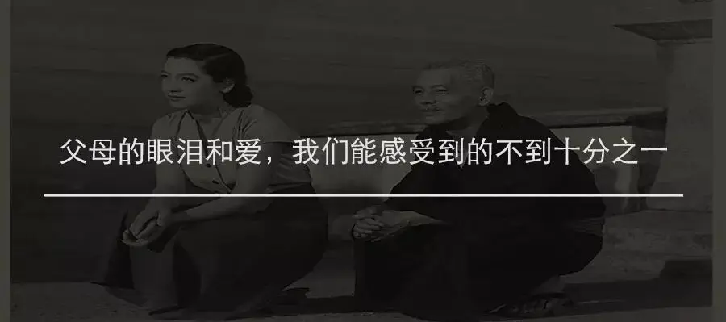
这里没有挑逗你眼目情欲的小鲜肉
也没有挑动你肉体情欲的段子
更没有膨胀你今生骄傲的鸡血
我们只在乎那些最质朴真诚的作品
在那里我们才能恢复真正的想象力
我们也坚信这才是我们真正需要的

ID:Six_hundred_hits
长按二维码，一键关注
【六百击】
电影评论
尽情分享朋友圈

微信二维码打赏通道